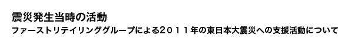
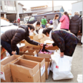

約1年間で約120万着の緊急衣料支援を行い、お客様からの募金を含め総額32億9000万円相当の支援を実施。
お客様募金：2.6億円
全世界の店頭によせられた募金は、日本赤十字社および各国の赤十字社などに送金させ
ていただきました。皆さまの善意に心から御礼申し上げます。
SAVE JAPAN！Tシャツの売上を日本赤十字に寄付：1.3億円
東日本大震災の発生直後から被災地支援を目的に立ちあげられた、エリア別救済支援情報サイトが「SAVE JAPAN!」です。私たちユニクロは、「SAVE JAPAN!」の趣旨に賛同し、同サイトの支援企業であるコンデナスト・グループが発行する雑誌『VOGUE JAPAN』『GQ JAPAN』の呼びかけのもと、世界中のアーティスト、クリエイターの方よりいただいた応援メッセージをＴシャツにしました。全世界の店舗で販売したTシャツの利益の一部の1.3億円を、義援金として日本赤十字社へ寄付しました。

桃柿育英基金（遺児孤児支援）：2.3億円
東日本大震災遺児・孤児向けの奨学金として設立された「桃・柿育英会 東日本大震災遺育英資金」。ファーストリテイリンググループは同会の主旨に賛同し、代表取締役会長兼社長の柳井正が発起人として参加を決定、日本国内ユニクロで、商品1枚の売上から100円を寄付する支援プログラムにより約2.3億円の寄付をし、支援を行いました。
衣料支援：10.6億円（120万着）
被災者の方々へ震災直後から下着類などの生活必需品を中心とした衣料を、従業員ボラティアによる直接配布も行い、合計で約120万着（10.6億円相当）をお届けしました。

取引先様からのご寄付：1.3憶円
取引先様から、1億3000万円のご寄付、毛布など20万着の支援物資をいただきました。
日本赤十字、NGOへの寄付：13億円
ファーストリテイリンググループから3億円、代表取締役会長兼社長の柳井正個人から10億円の義援金を寄付しました。
従業員寄付：1.8憶円
全世界のファーストリテイリンググループ従業員から約1億8,000万円を寄付しました。